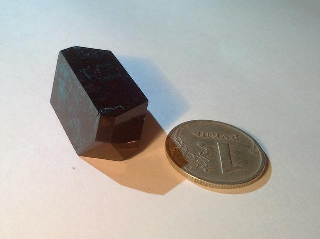

Copper Acetate
Formula: Cu(CH3COO)2·H2O  Copper salt of acetic acid.
{kind=link}
Properties
- Crystal system: monoclinic
- Crystal shape: slant prism
- Color: dark blue, almost black
- Stability on air: stable, though some people report slow weathering.
Preparation
I've made it electrochemically, by dissolving copper anode in acetic acid. An easier way would be the following 2-step reaction, starting from copper (II) sulphate CuSO4.
First, dissolve some CuSO4 in water and add baking soda NaHCO3. Sodium carbonate (Na2CO3) or hydroxide (NaOH) are fine too. Immediately, CO2 gas will release (beware of exceffive foaming), and green-blue sediment of the basic copper (II) carbonate will precipitate:
2CuSO4 + 2NaHCO3 → CuCO3·Cu(OH)2(s) + Na2SO4 + CO2(g)
Let the sediment to settle down, wash it 2-3 times, then dissolve it it in the acetic acid:
CuCO3·Cu(OH)2 + 4CH3COOH → 2Cu(CH3COO)2 + 2H2O + CO2(g)
You will obtain blue solution of the copper (II) acetate. Again, carbon dioxide gas would form, so don't add a lot of acid at once. In case you are getting dark-blue precipitate, add more water: copper acetate has relatively low solubility in water.
Growing
Solubility of this compound is quite low: 7.2g per 100ml.
Avoid strong heating, because it causes hydrolysis. Some additional acetic acid improves quality.
Safety
Like all copper compound, it is moderately toxic, so avoid eating it.
{kind=link}
{kind=link}
{kind=link}